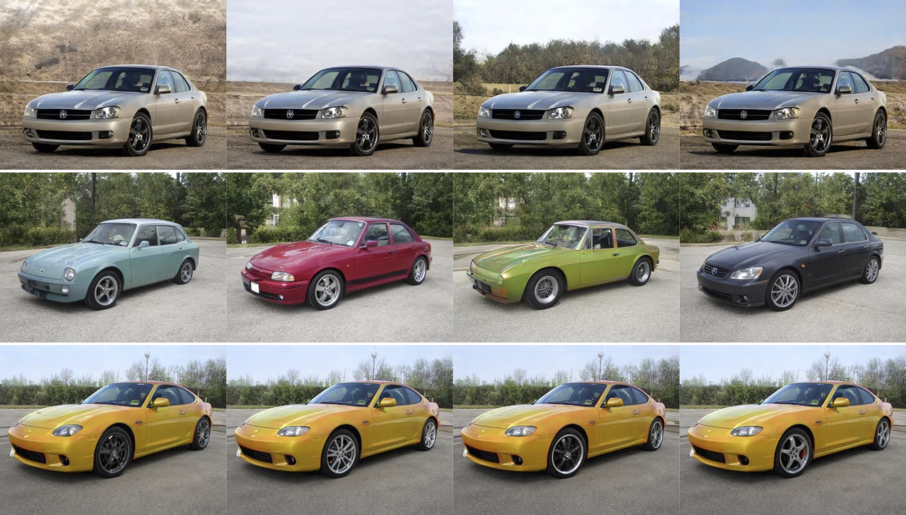
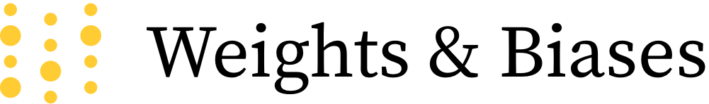

Yuval Alaluf

I'm an MSc student studying Computer Science at Tel-Aviv University under the supervision of Prof. Daniel Cohen-Or. I am particularly interested in Computer Vision and am currently working on research focusing on image generation and image manipulation.
Publications
-
Third Time's the Charm? Image and Video Editing with StyleGAN3
Paper Code Project Page
StyleGAN is arguably one of the most intriguing and well-studied generative models, demonstrating impressive performance in image generation, inversion, and manipulation. In this work, we analyze the recent StyleGAN3 generaotor. Along the way, we explore StyleGAN3's editing capabilities and introduce a video editing pipeline that leverages the capabilities of a fine-tuned StyleGAN3 generator to reduce texture sticking and expand the field of view of the edited video.
-
 State-of-the-Art in the Architecture, Methods and Applications of StyleGAN EUROGRAPHICS, 2022 (STARs)
State-of-the-Art in the Architecture, Methods and Applications of StyleGAN EUROGRAPHICS, 2022 (STARs)
Paper
This state-of-the-art report covers StyleGAN and the ways it has been employed since its conception, while also analyzing its limitations. We begin by studying StyleGAN's unique architecture and rich latent spaces. We then continue our investigation and discuss how StyleGAN has been used for editing both synthetic and real images, leading us to the world of GAN inversion and latent space embedding. We continue our journey and explore how StyleGAN can be used to tackle a wide-range of downstream tasks, both generative and discriminative in nature.
-
HyperStyle: StyleGAN Inversion with HyperNetworks for Real Image Editing (*Denotes equal contribution) CVPR, 2022
Paper Code Project Page
HyperStyle introduces hypernetworks for learning to refine the weights of a pre-trained StyleGAN generator with respect to a given input image. Doing so enables optimization-level reconstructions with encoder-like inference times and high editability. HyperStyle also generalizes well to out-of-domain images, even when unobserved during the training of the hypernetwork or generator.
-
StyleFusion: A Generative Model for Disentangling Spatial Segments ACM TOG, 2022
Paper Code
We present StyleFusion, a new mapping network for learning a semantically-aware disentangled representation of images. StyleFusion allows users to fuse a set of input latent codes into a single unified image in which each semantic region is controlled by one of the input latent codes, providing plug-and-play flexibiliy in the synthesis process.
-
ReStyle: A Residual-Based StyleGAN Encoder via Iterative Refinement ICCV, 2021
Paper Code Project Page Demo
Recent encoders have made great progress in inverting real images, but they still fall short at times. What if we could give the encoder a second chance? With our method, ReStyle, we try to do exactly that by gradually improving the inversion in a self-correcting manner.
-
Only a Matter of Style: Age Transformation Using a Style-Based Regression Model SIGGRAPH, 2021
Paper Code Project Page Demo
We present SAM, a method for modeling fine-grained life-long age transformation. SAM leverages the rich semantics of the StyleGAN latent space and learns non-linear paths for transforming real face images.
-
Designing an Encoder for StyleGAN Image Manipulation SIGGRAPH, 2021
Paper Code
Identifying the existence of the distortion-editability and distortion-perception tradeoffs within the StyleGAN latent space, we suggest principles for designing encoders for facilitating editing on real images by balancing these tradeoffs.
-
Encoding in Style: a StyleGAN Encoder for Image-to-Image Translation CVPR, 2021
Paper Code Project Page Demo
We present pixel2style2pixel (pSp), a generic image-to-image translation framework based on an encoder that directly maps real images into the latent space of a pretrained StyleGAN generator.
2022
2021
2020
Talks
| March 19, 2022 |
Datagen "Leveraging StyleGAN for Image Editing and Manipulation" (With a focus on HyperStyle and Third Time's the Charm?) |
| March 19, 2022 |
SPARK FX 2022 "Leveraging StyleGAN for Image Editing and Manipulation" (Lecture details can be found here) |
| January 2, 2022 |
The Technion: Reinforcement Learning Research Lab (Aviv Tamar) "Recent Advancements in GAN Inversion" |
| October 26, 2021 |
Israeli Machine Vision Conference
(Presentation on "ReStyle") |
| October 20, 2021 |
Shenkar College / Google Developer Student Clubs "GAN You Fake It?" (Lecture on the use of GANs in various real-world domains and applications) |
| September 1, 2021 |
Metabob Podcast
(Video can be found here) |
| August 11, 2021 |
Simon Fraser University Computer Graphics Seminar "Recent Advancements in GAN Inversion" |
| August 9, 2021 |
SIGGRAPH 2021 Labs Technical Papers Live Demo "Only a Matter of Style" |
| June 29, 2021 |
Adobe Computer Graphics Seminar "Recent Advancements in GAN Inversion" |
Articles and Other Publications
-
Introducing the pixel2style2pixel (pSp) Framework with W&B
Blog Post
In this article, we explore the pixel2style2pixel (pSp) framework and show how integrating and tracking your pSp experiments with Weights and Biases is seamless.